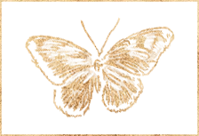
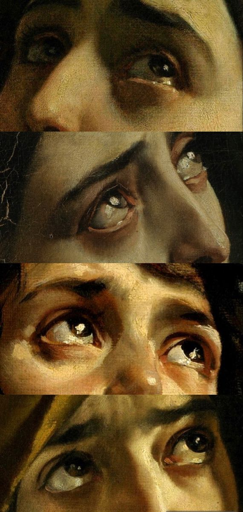
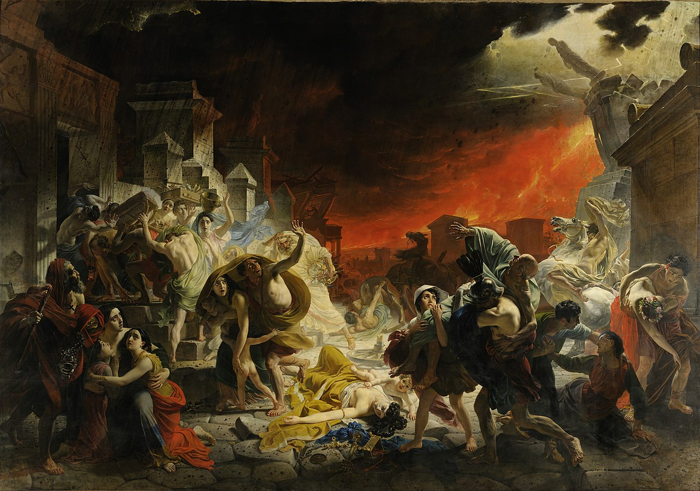
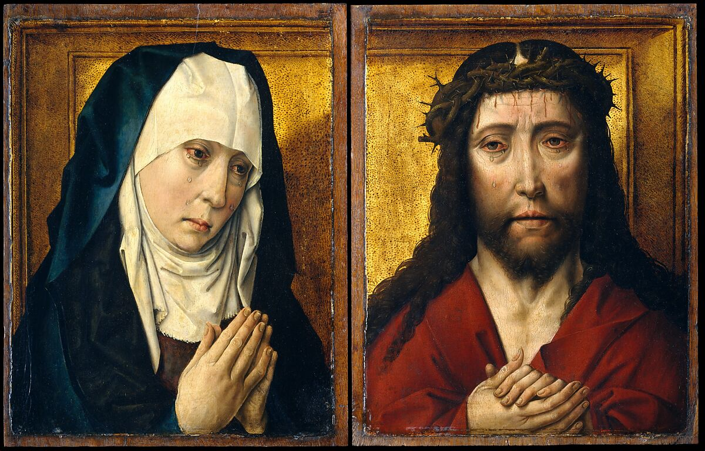
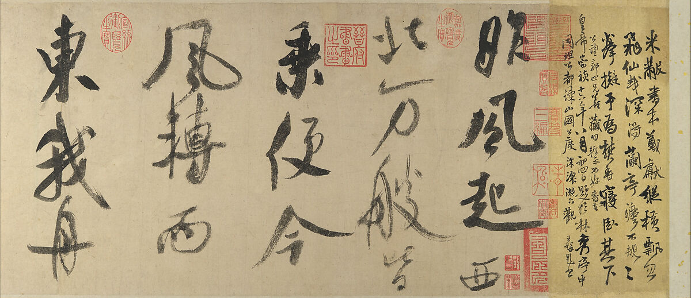
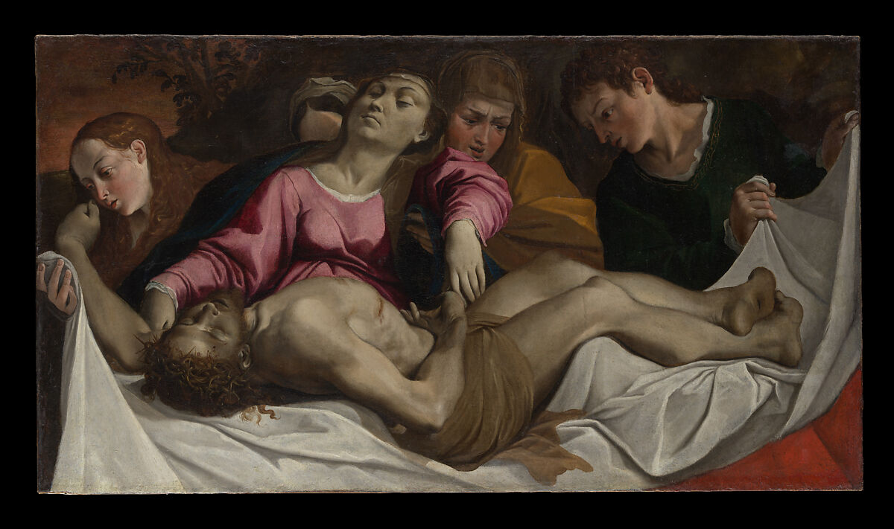
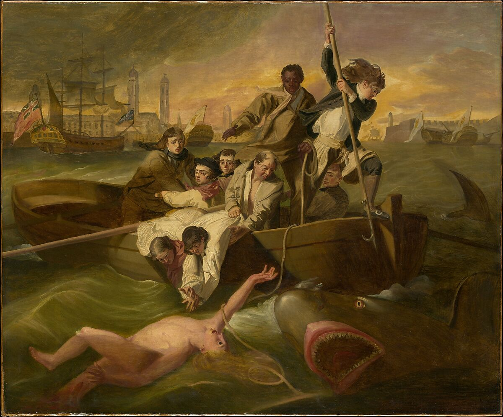
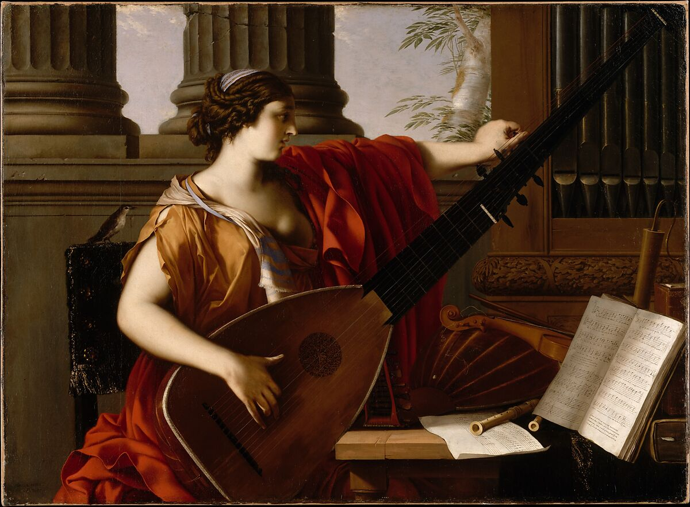
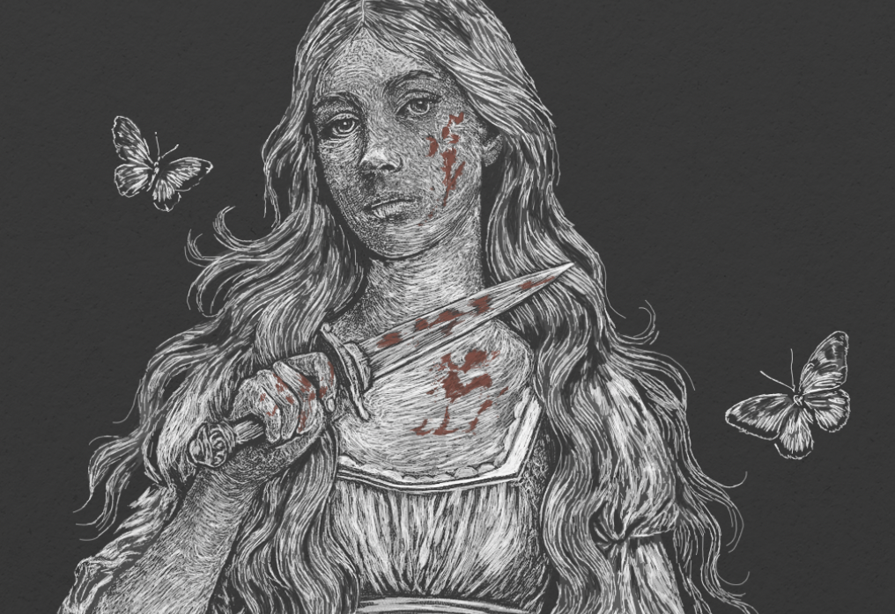

What are you supposed to do with overwhelming sorrow, grief, anxiety, pain, anger, heartbreak, suspicion, insecurity, obsessive thought, resentment, fear, dread, jealousy, or shame? These afflictions, so unimaginably capable of governing the mind and your perception of reality, often arise from unexpectedly losing someone you love or a traumatic occurrence that changed the way you see the world.
The Last Day of Pompeii (Karl Bryullov, 1830-1833). Detail fragments (left) show figures from the original composition.

These entities are so thoroughly consuming that they occupy every corner of the mind. There is no room left for any other kind of thought.
The energy you might have devoted to setting goals and moving toward them is instead spent on simply holding yourself together, or masking your feelings away just to get through. In such a state, it's easy to forget what you once wanted for yourself.
The Mourning Virgin; Christ Crowned with Thorns. Artist: Posthumous Workshop Copy after Dieric Bouts (Netherlandish, Leuven, ca. 1525). Oil on oak.

The most immediate and natural impulse, when caught in such a state, is to escape.
This presents itself in many forms: the endless indulgence of shows or games, scrolling on screens, abusing any substance that numbs you, or using other people to feel less lonely. Some diversions may be gentler or less harmful than others, but at their root, they are very much the same.
Other times you may not escape at all, but instead surrender entirely. Maybe you turn inward, isolate yourself, sink beneath sorrow, and tend so incessantly to your wound that it becomes the only thing you see. Or, perhaps you can keep moving forward, but on autopilot, numb, and without any sense of purpose.
Whatever you do, it hurts all the same.
Poem Written in a Boat on the Wu River. Calligrapher: Mi Fu (Chinese, 1051–1107). Period: Northern Song dynasty (960–1127). Date: ca. 1095.

Pain has a way of making itself known; it will not be brushed aside or silenced. The notion that “the only way out is through” may not be particularly welcome, but it is profoundly true. Many belief systems encourage detachment, and in many areas of life I find that practice both wise and necessary.
Yet I hold, too, that to honor one's pain, to meet it with honesty and with care, is not any less important. To feel with depth is not a weakness but a mark of a life lived with integrity.
Grief may be understood as the final translation of love. It is the giving of devotion to one who can no longer receive it as once they did. It is a sacred reminder of what you once shared, and of the depth of feeling for which you were fortunate enough to know. This deserves to be cherished. It shouldn't go to waste.
Anger has a purpose. It is the voice of the self perceiving that it has been dishonored, mistreated, or deprived of what it values. It rises in defense of your dignity, boundaries, and of those things most dear to you.
The Lamentation. Artist: Ludovico Carracci (Italian, Bologna, 1555–1619). Date: ca. 1582. Medium: Oil on canvas.

It is the brain's job to download painful experiences. The fight, flight, or freeze response is a default setting of the brain. The human amygdala has been divinely designed to alert us when we are in danger, and/or out of alignment, and/or experiencing a threat to homeostasis.
We are all animals inclined to run from pain. And so, when safety, whether of the heart, the body, or the mind, feels threatened, this small sentinel does its duty. A sudden memory, smell, or trigger all may stir it. And when the heart races, the palms sweat, and the stomach churns, none of this is error. It is the body's way of declaring: you are under siege, and I will protect you.
To surrender to these feelings is not to fall beneath them, but to discover within their depths what you long for, what you require, and what must be changed. Pain does not come to ruin you, nor is the body an enemy. It comes as a messenger only, asking to be acknowledged, to be understood, to be held, and (in time) to be transmuted. Because of this each one of us is called to the difficult work of threading past experiences into the present, so that it ceases to burden and instead instructs.
Watson and the Shark. Artist: John Singleton Copley (American, Boston, Massachusetts, 1738–1815, London). Date: ca. 1778.

What unites your most cherished songwriters, artists, rappers, painters, directors, poets, or novelists? Each is, in truth, a type of alchemist. They have taken sorrow, anger, pain, and heartbreak in their rawest forms, and turned them into stories that outlast their moment.
Allegory of Music. Artist: Laurent de La Hyre (French, Paris, 1606–1656, Paris). Date: 1649. Medium: Oil on canvas.
J Dilla, confined to a hospital bed and nearing his end, composed Donuts, an album that still beats with irrepressible life, released only days before his last breath. How he accomplished such a thing, I can't say. To create music so impossibly alive while death itself drew near is beyond comprehension. Yet he did it. He turned his pain and mortality into something joyful, celebratory, and uplifting to others. Here lies the reason I cannot help but love humanity, for at its best, it is so tenderly beautiful.
It amazes me that this work, born on the edge of death, outlives its maker and reaches me still, blasting from my car speakers, giving strength to the hours of my day. Even in our darkest hours, we carry the power to generate something everlasting, touching lives long after our own have ended.
Donuts. Artist: J Dilla (American, 1974-2006). Released: 2006. Album cover.

As one who has known suffering, as we all have, let me not be mistaken. Success is not the aim of transmutation. Its purpose is not to fashion pain into achievement, into accolades, or even into recognition. The work lies in the act itself: in laying down what weighs upon us, in drawing meaning from what once was grief, in practicing a kind of alchemy with the material of one’s own life.
I can assure you, this is deeply healing work. When one chooses to take that heavy, oppressive energy and use it as fuel, a new clarity of focus will emerge. This is one that may very well save you. Whether it becomes writing, music, the shaping of something with your hands, or even the simplest act of care, the form hardly matters. What matters is that it offers direction. Pain is not erased, but given shape. It ceases to be a force that consumes, and becomes something you carry forward.
We need not remain at the mercy of our suffering. Moment by moment, we may decide what meaning to make of it, and what legacy it will leave behind. In so doing, we serve not only ourselves, but those who come after us.
In the end, the question becomes the one posed to me by a wise friend, Nick Meccia: “Do you see the world as something to take from, or something to give to?”
Untitled. Artist: Olive Price (American, contemporary). Medium: Digital painting, Photoshop.